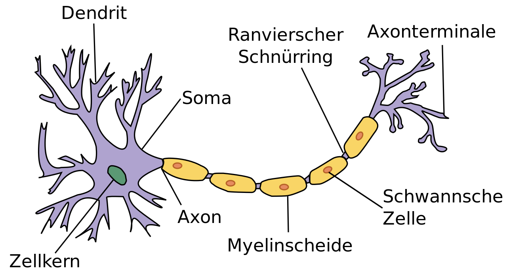
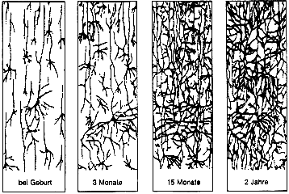
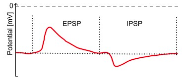
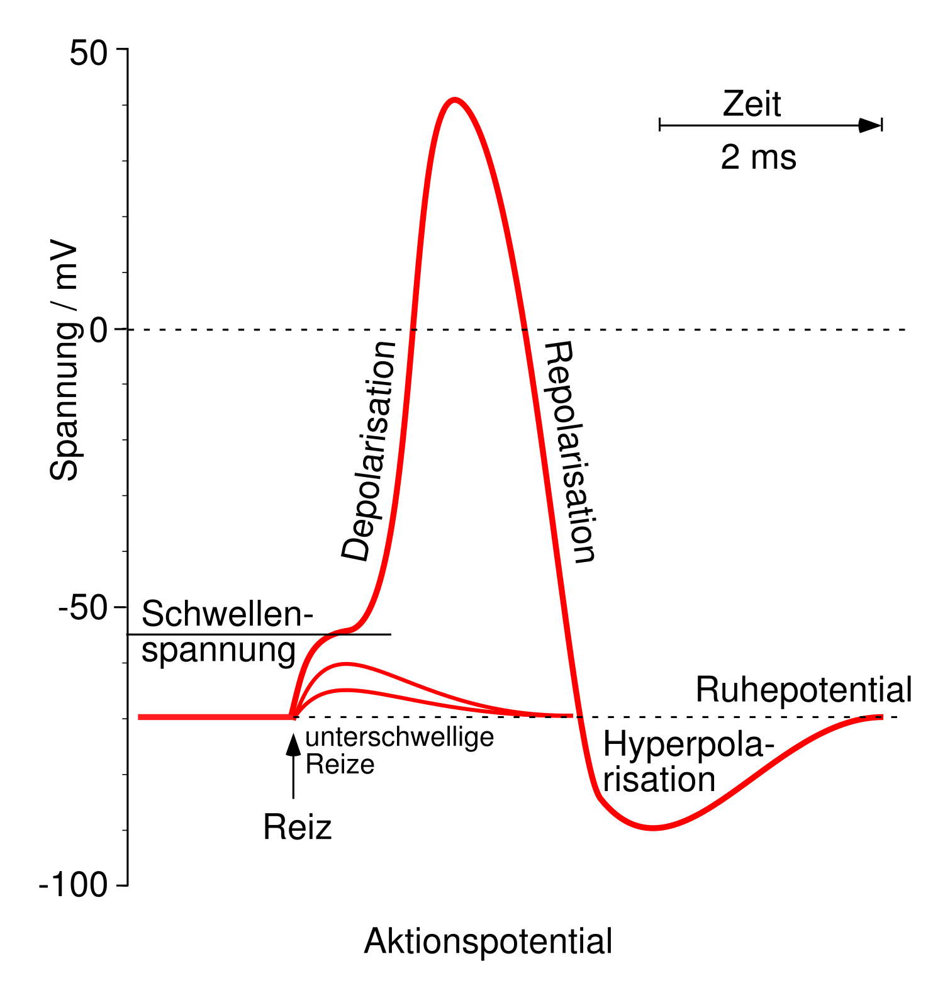

Wie verarbeitet unser Gehirn Informationen?
Was seht ihr auf diesem Bild?
{kind=link}
(https://portal.gastfreund.net/bremen/262230)
Woher wisst ihr, was hier dargestellt ist, beziehungsweise woran konntet ihr es erkennen? Diese Frage klingt jetzt vielleicht etwas komisch, aber wenn man einen Computer fragt, was auf diesem Bild zu sehen ist, dann wird dieser damit Probleme haben. Was für Schwierigkeiten fallen euch ein, die dieser dabei haben könnte?
Angenommen, wir bringen dem Computer bei, dass auf diesem Bild die Bremer Stadtmusikanten zu sehen sind. Selbst dann wird er Schwierigkeiten haben zu erkennen, dass die folgenden Bilder diese auch darstellen.
{kind=link}
(https://de.wikipedia.org/wiki/Datei:Die_Bremer_Stadtmusikanten.jpg) (https://www.bremen-tourismus.de/bremen/package/detail1/DEU99999990021103028?lang=de) (https://www.geo.de/geolino/buechertipps/die-bremer-stadtmusikanten_30122522-30166320.html) (https://www.echtkind.de/ostheimer-holztiere-set-bremer-stadtmusikanten-4-teilig-2630.html)
{kind=link}
Selbst ein Kind, das nie ein Bild der Bremer Stadmusikanten gesehen hat, aber das Märchen kennt, könnte für jedes Bild sagen, was dargestellt ist. Wie kommt es, dass Computer die schwierigsten Berechnungen im Bruchteil einer Sekunde ausführen können, aber bei solchen für Menschen einfachen Aufgaben scheitern? Dem zugrunde liegt eine grundsätzlich unterschiedliche Art der Informationsverarbeitung. Unser Gehirn arbeitet nämlich nicht mit Nullen und Einsen, wie klassische Computer es tun. Aber wie funktioniert die Verarbeitung von Informationen im Gehirn eigentlich?
Das Neuron
Unser Gehirn besteht aus ungefähr 100 Milliarden Nervenzellen. Diese werden auch als Neuronen bezeichnet. Sie können mit Zehntausenden anderen Neuronen verbunden sein und fungieren dadurch als Informationssammler und Weitergeber. Ein Neuron bekommt Input von vielen anderen Neuronen über seine Dendriten. Dieser wird in den Zellkörper, den sogenannten Soma, geleitet. Wenn der dort gesammelte Input ausreichend stark ist und damit als informationshaltig angesehen wird, erzeugt die Nervenzelle selbst ein Signal, ein sogenanntes Aktionspotential. Dieses läuft entlang des Axons zu den Axonterminalen, von wo aus es dann wiederum an viele andere Neuronen weitergegeben werden kann.
{kind=link}
(https://de.wikipedia.org/wiki/Datei:Neuron_(deutsch)-1.svg)
-1.svg){kind=link}
Die Verbindungen zwischen Neuronen werden Synapsen genannt. Diese sind allerdings nicht statisch, sondern ändern sich die ganze Zeit. Dabei können ganz neue Synapsen entstehen, andere die nicht verwendet werden verschwinden oder das synaptische Gewicht, also die Stärke einer Verbindung, kann geändert werden. Wenn zum Beispiel ein Neuron immer ein Aktionspotential generiert, nachdem es Input von einem anderen bekommen hat, dann scheint eine gewisse Kausalität zwischen diesen Ereignissen vorzuliegen und die jeweilige Synapse wird gestärkt. Andersherum wird beispielsweise die Verbindung zu einem Neuron, das nichts zum Erzeugen des Aktionspotential beiträgt, geschwächt oder verworfen. Das Entstehen von Synapsen zwischen Neuronen und das Anpassen ihrer Gewichte ermöglicht es dem Menschen, neue Dinge zu lernen. Durch dieses dynamische Netzwerk aus Billiarden von Verbindungen können wir unter anderem den Informationsgehalt aus Fotos extrahieren und diesen dann auf ähnliche Bilder anwenden.
{kind=link}
(https://arbeitsblaetter.stangl-taller.at/GEHIRN/Gehirn-Neuronen.shtml)
Das Aktionspotential
Wie entscheidet die Zelle nun aber, ab wann ein Eingangsignal informationshaltig ist und es ein Aktionspotential erzeugen soll und wie sieht dieses aus? Dafür gibt es verschiedene Kriterien und das gehört wie ein Großteil der Neurowissenschaften zum Gegenstand aktueller Forschung. Hier wollen wir nun ein simples Kriterium betrachten, nämlich das der Schwellenspannung. Im Ruhezustand ist das Zellinnere im Vergleich zur Umgebung aufgrund anderer Ionenkonzentrationen negativ geladen. Die Ruhespannung, die an der Zellmembran anliegt, beträgt in etwa -70mV. Bekommt das Neuron nun Input von anderen Nervenzellen, ändert sich dieses Potential. Für exzitatorischen (anregenden) Input steigt die Spannung. Es gibt aber auch inhibitorische (hemmende) Synapsen, die dafür sorgen, dass dies nicht passiert oder dass das Membranpotential sogar nach unten gezogen wird. Der entstehende Verlauf in der Membranspannung wird exzitatorisches bzw. inhibitorisches postsynaptisches Potential (EPSP/IPSP) genannt.
{kind=link}
(http://www.chemgapedia.de/vsengine/vlu/vsc/de/ch/8/bc/vlu/neurotransmission/neuro_modul.vlu.html)
Damit ein Aktionspotential erzeugt wird, muss ausreichend exzitatorischer Input vorliegen. Was in diesem Fall ausreichend bedeutet, wird über eine Schwellenspannung definiert, die bei etwa -55mV liegt. Wird dieser Wert erreicht, so entsteht das typische Aktionspotential: Die Spannung steigt sehr schnell sehr stark an (bis zu einem Wert von +40mV), daraufhin fällt sie wieder rasch ab, ist kurzzeitig sogar niedrieger als im Ruhezustand und nähert sich danach wieder ihrem Ruhewert an. Der Bereich, in dem das Membranpotential niedriger als die Ruhespannung ist, wird als Hyperpolarisation bezeichnet und dauert die sogenannte Refraktärzeit an. Währenddessen kann weiterer Input kein neues Aktionspotential bewirken. Der ganze Prozess dauert nur wenige Millisekunden und da der Spannungsverlauf wie eine dünne Spitze aussieht, wird das Aktionspotential auch als Spike (englisch für Spitze) bezeichnet.
{kind=link}
(https://de.wikipedia.org/wiki/Nervenzelle#/media/Datei:Aktionspotential.svg)
{kind=link}